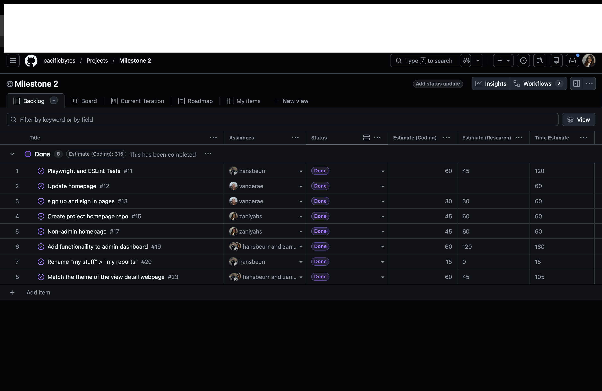

Introduction
When I first heard the words "effort estimation," I thought it sounded simple enough — just guess how long something will take, write it down, and move on. What I didn't expect was how much that simple act of guessing would teach me about myself as a developer, about my team's workflow, and about the unpredictable nature of building software from scratch. Working on Rainbow Locator, a lost and found website built for students at the University of Hawaii, gave me a real world crash course in project management that no textbook could have fully prepared me for.
Rainbow Locator allows UH students to report lost items by submitting a description, a date, and the last known location on campus. Students who find items can also log them into the system, making it easier to reunite people with their belongings. My primary role on the team was focused on the front end — making sure the interface was clean, intuitive, and visually appealing. I had a smaller hand in the functional side of the app, but that didn't mean my tasks were any easier to estimate. Beyond the technical work, I also ended up serving as the team's live representative during class presentations, which meant I had to develop a thorough understanding of the entire project — not just the pieces I personally built. That experience gave me a unique perspective on the project as a whole and pushed me to stay informed about progress across the board, even on features outside my immediate lane. To be honest without having to do that I probably would have been very confused for 80% of the project.
How I Made My Estimates
With only about four months of software development experience under my belt, I didn't have a deep well of historical data to draw from when making estimates. I couldn't look back at a portfolio of past projects and say, "Oh, this is similar to that feature I built six months ago." Instead, I leaned heavily on intuition and task decomposition — breaking each issue down into smaller mental steps and assigning rough time blocks to each one — which the professor helped with tremendously by constantly reminding us that "you need to break that up into smaller issues."
For example, when estimating styling tasks like building out a card component for lost item listings, I would think through the steps: researching the layout, writing the CSS, testing it across screen sizes, and making adjustments. Each of those felt like maybe 15–20 minutes individually, so I'd add them up and round to the nearest half hour. It wasn't scientific, but it gave me a structured starting point rather than just throwing out a random number. For issues that felt familiar — anything involving basic UI layout — I felt more confident. For anything touching logic or backend integration, I padded my estimates generously because I knew those areas were less predictable for me.
Did Estimating Help Even When I Was Wrong?
Honestly, yes — even when my estimates were off, the act of estimating forced me to actually think through a task before diving in. It made me ask: what does this issue actually require? That question alone saved me from starting work without a clear plan — which is a crucial step for a coder that is often overlooked.
One example that sticks out is the delete item button. I estimated it would take around 60 minutes, thinking there might be some confirmation logic or styling work involved. In reality, it took closer to 10 minutes. I had overestimated because I was thinking about edge cases that turned out to be already handled elsewhere in the codebase. While that particular estimate was off, the exercise of thinking it through beforehand meant I wasn't scrambling when I actually sat down to work on it — I already knew my mental steps.
On the flip side, there were times where my estimate being wrong in the other direction was equally informative. Those moments reminded me that software development rarely goes exactly as planned, and that building in buffer time is a skill worth developing.
The Admin Login Page: When Estimation Gets Humbling
The most instructive experience I had with effort tracking came from working on the admin login page. At first glance, it seemed like a straightforward task — we already had a login page for regular users, so how different could it be? I estimated it would take about the same amount of time, maybe slightly more.
What I learned from that experience wasn't just that I underestimated — it was why I underestimated. I had assumed similarity without verifying it. Going forward, I started asking more questions upfront before locking in an estimate, specifically looking for hidden complexity that might not be obvious at first glance.
I was wrong. The admin login needed to be meaningfully different from the regular user flow — different UI cues to signal elevated access, and different validation logic. It took noticeably longer than I had planned, and I had to push back other tasks on my list to accommodate.
How I Tracked My Actual Effort
I tracked my time using manual start-stop notes on my phone. Whenever I sat down to work on an issue, I'd log the time I started, and when I stopped — I'd log that too. I kept these notes either in the GitHub issue comments or in a simple running document I kept open on the side.
Was it perfectly accurate? Not at all. I didn't count bathroom breaks or social media scroll breaks. There were moments where I forgot to note my stop time and had to estimate it after the fact, which introduced some imprecision. That said, I believe my tracking was not reasonably accurate for coding tasks. Non-coding effort, like reading documentation, thinking through a design problem, or collaborating with teammates about layout decisions, was harder to capture consistently and likely slightly undercounted in my logs.
AI Assistance: Claude as a Debugging Partner
I used Claude (by Anthropic) during this project, primarily as a debugging aid when I got stuck on code. My use was relatively light — I didn't use it to generate large blocks of code wholesale, but rather to help me understand why something wasn't working the way I expected.
A typical interaction looked like this: I'd paste in a snippet of code that was producing an unexpected result, describe what I wanted it to do, and ask Claude to help me identify the issue. In most cases, the explanation helped me understand the problem well enough to fix it myself. Occasionally I'd adapt a suggested fix directly into my code, but I always reviewed it carefully to make sure it fit the context of our specific project.
I counted the time I spent formulating my prompts, reviewing Claude's responses, testing any suggested fixes, and integrating changes as part of my coding effort. This felt like the most honest way to capture it — that time was genuinely spent working on the code, just with an AI collaborator in the loop.
What I'd Do Differently Next Time
Looking back, there are a few things I'd change about my process. First, I'd ask more questions before estimating. The admin login page taught me that surface level similarity between tasks can be deceiving. A quick five minute conversation with a teammate about the full scope of an issue before writing down an estimate would have saved me from several misses.
I'd also be more intentional about tracking non-coding effort. Design thinking, planning sessions, and even the time spent reading documentation all contribute to how long an issue actually takes. Leaving that out of the picture gives an incomplete view of where time actually goes in a project.
Conclusion
Effort estimation seems pointless in the beginning, but I learned that it was needed in order to stay on track. It forces clarity, surfaces assumptions, and creates a feedback loop that makes you better over time. Working on Rainbow Locator taught me that the goal of estimation isn't to be right — it's to be reasonable, stay curious about why you were wrong, and use that information to improve. That, more than any specific tool or technique, is the real skill worth building.